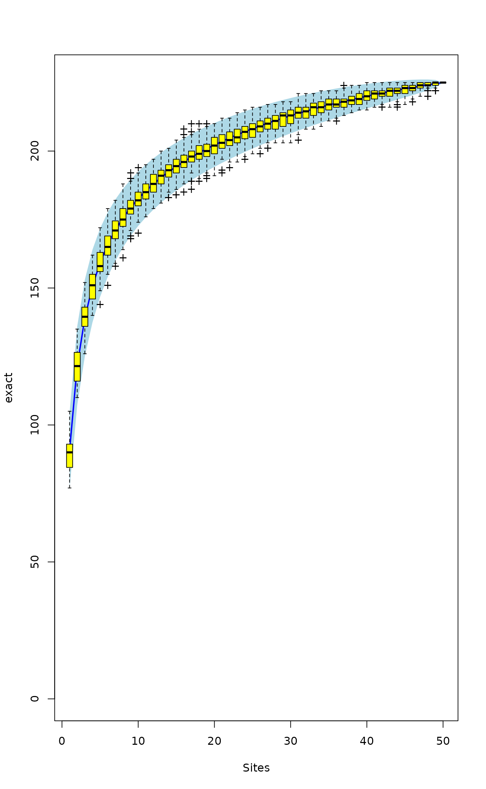
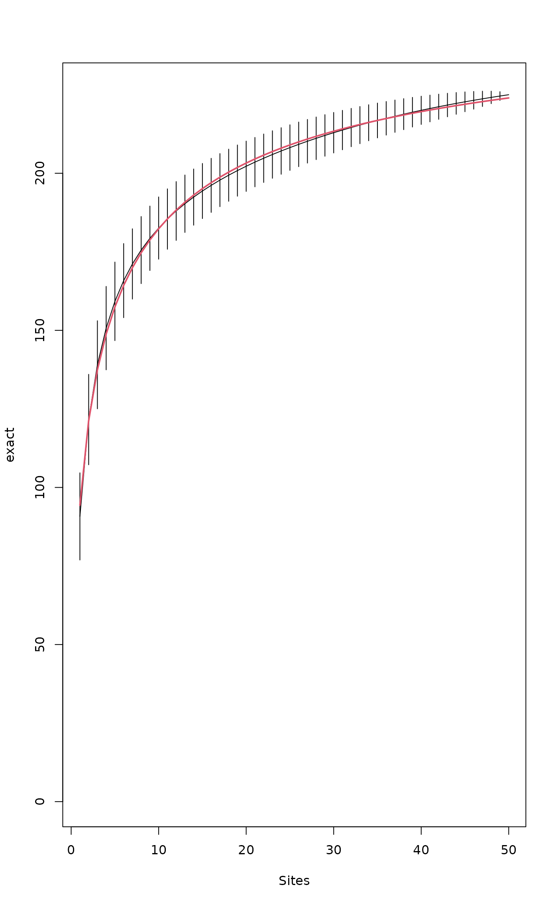
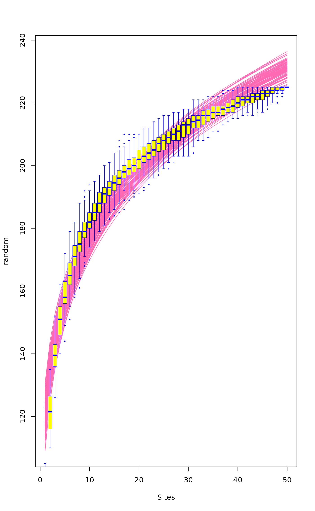

Species Accumulation Curves
specaccum.RdFunction specaccum finds species accumulation curves or the
number of species for a certain number of sampled sites or
individuals.
Usage
specaccum(comm, method = "exact", permutations = 100,
conditioned =TRUE, gamma = "jack1", w = NULL, subset, ...)
# S3 method for class 'specaccum'
plot(x, add = FALSE, random = FALSE, ci = 2,
ci.type = c("bar", "line", "polygon"), col = par("fg"), lty = 1,
ci.col = col, ci.lty = 1, ci.length = 0, xlab, ylab = x$method, ylim,
xvar = c("sites", "individuals", "effort"), ...)
# S3 method for class 'specaccum'
boxplot(x, add = FALSE, ...)
fitspecaccum(object, model, method = "random", ...)
# S3 method for class 'fitspecaccum'
plot(x, col = par("fg"), lty = 1, xlab = "Sites",
ylab = x$method, ...)
# S3 method for class 'specaccum'
predict(object, newdata, interpolation = c("linear", "spline"), ...)
# S3 method for class 'fitspecaccum'
predict(object, newdata, ...)
specslope(object, at)Arguments
- comm
Community data set.
- method
Species accumulation method (partial match). Method
"collector"adds sites in the order they happen to be in the data,"random"adds sites in random order,"exact"finds the expected (mean) species richness,"coleman"finds the expected richness following Coleman et al. 1982, and"rarefaction"finds the mean when accumulating individuals instead of sites.- permutations
Number of permutations with
method = "random". Usually an integer giving the number permutations, but can also be a list of control values for the permutations as returned by the functionhow, or a permutation matrix where each row gives the permuted indices.- conditioned
Estimation of standard deviation is conditional on the empirical dataset for the exact SAC
- gamma
Method for estimating the total extrapolated number of species in the survey area by function
specpool- w
Weights giving the sampling effort.
- subset
logical expression indicating sites (rows) to keep: missing values are taken as
FALSE.- x
A
specaccumresult object- add
Add to an existing graph.
- random
Draw each random simulation separately instead of drawing their average and confidence intervals.
- ci
Multiplier used to get confidence intervals from standard deviation (standard error of the estimate). Value
ci = 0suppresses drawing confidence intervals.- ci.type
Type of confidence intervals in the graph:
"bar"draws vertical bars,"line"draws lines, and"polygon"draws a shaded area.- col
Colour for drawing lines.
- lty
line type (see
par).- ci.col
Colour for drawing lines or filling the
"polygon".- ci.lty
Line type for confidence intervals or border of the
"polygon".- ci.length
Length of horizontal bars (in inches) at the end of vertical bars with
ci.type = "bar".- xlab,ylab
Labels for
x(defaultsxvar) andyaxis.- ylim
the y limits of the plot.
- xvar
Variable used for the horizontal axis:
"individuals"can be used only withmethod = "rarefaction".- object
Either a community data set or fitted
specaccummodel.- model
Nonlinear regression model (
nls). See Details.- newdata
Optional data used in prediction interpreted as number of sampling units (sites). If missing, fitted values are returned.
- interpolation
Interpolation method used with
newdata.- at
Number of plots where the slope is evaluated. Can be a real number.
- ...
Other parameters to functions.
Details
Species accumulation curves (SAC) are used to compare diversity
properties of community data sets using different accumulator
functions. The classic method is "random" which finds the mean
SAC and its standard deviation from random permutations of the data,
or subsampling without replacement (Gotelli & Colwell 2001). The
"exact" method finds the expected SAC using sample-based
rarefaction method that has been independently developed numerous
times (Chiarucci et al. 2008) and it is often known as Mao Tau
estimate (Colwell et al. 2012). The unconditional standard deviation
for the exact SAC represents a moment-based estimation that is not
conditioned on the empirical data set (sd for all samples > 0). The
unconditional standard deviation is based on an estimation of the
extrapolated number of species in the survey area (a.k.a. gamma
diversity), as estimated by function specpool. The
conditional standard deviation that was developed by Jari Oksanen (not
published, sd=0 for all samples). Method "coleman" finds the
expected SAC and its standard deviation following Coleman et
al. (1982). All these methods are based on sampling sites without
replacement. In contrast, the method = "rarefaction" finds the
expected species richness and its standard deviation by sampling
individuals instead of sites. It achieves this by applying function
rarefy with number of individuals corresponding to
average number of individuals per site.
Methods "random" and "collector" can take weights
(w) that give the sampling effort for each site. The weights
w do not influence the order the sites are accumulated, but
only the value of the sampling effort so that not all sites are
equal. The summary results are expressed against sites even when the
accumulation uses weights (methods "random",
"collector"), or is based on individuals
("rarefaction"). The actual sampling effort is given as item
Effort or Individuals in the printed result. For
weighted "random" method the effort refers to the average
effort per site, or sum of weights per number of sites. With
weighted method = "random", the averaged species richness is
found from linear interpolation of single random permutations.
Therefore at least the first value (and often several first) have
NA richness, because these values cannot be interpolated in
all cases but should be extrapolated. The plot function
defaults to display the results as scaled to sites, but this can be
changed selecting xvar = "effort" (weighted methods) or
xvar = "individuals" (with method = "rarefaction").
The summary and boxplot methods are available for
method = "random".
Function predict for specaccum can return the values
corresponding to newdata. With method "exact",
"rarefaction" and "coleman" the function uses analytic
equations for interpolated non-integer values, and for other methods
linear (approx) or spline (spline)
interpolation. If newdata is not given, the function returns
the values corresponding to the data. NB., the fitted values with
method="rarefaction" are based on rounded integer counts, but
predict can use fractional non-integer counts with
newdata and give slightly different results.
Function fitspecaccum fits a nonlinear (nls)
self-starting species accumulation model. The input object
can be a result of specaccum or a community in data frame. In
the latter case the function first fits a specaccum model and
then proceeds with fitting the nonlinear model. The function can
apply a limited set of nonlinear regression models suggested for
species-area relationship (Dengler 2009). All these are
selfStart models. The permissible alternatives are
"arrhenius" (SSarrhenius), "gleason"
(SSgleason), "gitay" (SSgitay),
"lomolino" (SSlomolino) of vegan
package. In addition the following standard R models are available:
"asymp" (SSasymp), "gompertz"
(SSgompertz), "michaelis-menten"
(SSmicmen), "logis" (SSlogis),
"weibull" (SSweibull). See these functions for
model specification and details.
When weights w were used the fit is based on accumulated
effort and in model = "rarefaction" on accumulated number of
individuals. The plot is still based on sites, unless other
alternative is selected with xvar.
Function predict for fitspecaccum uses
predict.nls, and you can pass all arguments to that
function. In addition, fitted, residuals, nobs,
coef, AIC, logLik and deviance work on
the result object.
Function specslope evaluates the derivative of the species
accumulation curve at given number of sample plots, and gives the
rate of increase in the number of species. The function works with
specaccum result object when this is based on analytic models
"exact", "rarefaction" or "coleman", and with
non-linear regression results of fitspecaccum.
Nonlinear regression may fail for any reason, and some of the
fitspecaccum models are fragile and may not succeed.
Value
Function specaccum returns an object of class
"specaccum", and fitspecaccum a model of class
"fitspecaccum" that adds a few items to the
"specaccum" (see the end of the list below):
- call
Function call.
- method
Accumulator method.
- sites
Number of sites. For
method = "rarefaction"this is the number of sites corresponding to a certain number of individuals and generally not an integer, and the average number of individuals is also returned in itemindividuals.- effort
Average sum of weights corresponding to the number of sites when model was fitted with argument
w- richness
The number of species corresponding to number of sites. With
method = "collector"this is the observed richness, for other methods the average or expected richness.- sd
The standard deviation of SAC (or its standard error). This is
NULLinmethod = "collector", and it is estimated from permutations inmethod = "random", and from analytic equations in other methods.- perm
Permutation results with
method = "random"andNULLin other cases. Each column inpermholds one permutation.- weights
Matrix of accumulated weights corresponding to the columns of the
permmatrix when model was fitted with argumentw.- fitted, residuals, coefficients
Only in
fitspecacum: fitted values, residuals and nonlinear model coefficients. Formethod = "random"these are matrices with a column for each random accumulation.- models
Only in
fitspecaccum: list of fittednlsmodels (see Examples on accessing these models).
References
Chiarucci, A., Bacaro, G., Rocchini, D. & Fattorini, L. (2008). Discovering and rediscovering the sample-based rarefaction formula in the ecological literature. Commun. Ecol. 9: 121–123.
Coleman, B.D, Mares, M.A., Willis, M.R. & Hsieh, Y. (1982). Randomness, area and species richness. Ecology 63: 1121–1133.
Colwell, R.K., Chao, A., Gotelli, N.J., Lin, S.Y., Mao, C.X., Chazdon, R.L. & Longino, J.T. (2012). Models and estimators linking individual-based and sample-based rarefaction, extrapolation and comparison of assemblages. J. Plant Ecol. 5: 3–21.
Dengler, J. (2009). Which function describes the species-area relationship best? A review and empirical evaluation. Journal of Biogeography 36, 728–744.
Gotelli, N.J. & Colwell, R.K. (2001). Quantifying biodiversity: procedures and pitfalls in measurement and comparison of species richness. Ecol. Lett. 4, 379–391.
Author
Roeland Kindt r.kindt@cgiar.org and Jari Oksanen.
Note
The SAC with method = "exact" was
developed by Roeland Kindt, and its standard deviation by Jari
Oksanen (both are unpublished). The method = "coleman"
underestimates the SAC because it does not handle properly sampling
without replacement. Further, its standard deviation does not take
into account species correlations, and is generally too low.
See also
rarefy and rrarefy are related
individual based models. Other accumulation models are
poolaccum for extrapolated richness, and
renyiaccum and tsallisaccum for
diversity indices. Underlying graphical functions are
boxplot, matlines,
segments and polygon.
Examples
data(BCI)
sp1 <- specaccum(BCI)
#> Warning: the standard deviation is zero
sp2 <- specaccum(BCI, "random")
sp2
#> Species Accumulation Curve
#> Accumulation method: random, with 100 permutations
#> Call: specaccum(comm = BCI, method = "random")
#>
#>
#> Sites 1.00000 2.00000 3.00000 4.00000 5.00000 6.00000 7.00000
#> Richness 89.75000 120.23000 137.62000 149.89000 158.82000 165.41000 171.14000
#> sd 5.87474 6.46803 6.54708 6.47278 6.14041 5.85014 5.41793
#>
#> Sites 8.00000 9.00000 10.00000 11.00000 12.0000 13.00000 14.00000
#> Richness 175.69000 179.37000 182.52000 185.34000 187.8700 190.29000 192.12000
#> sd 5.46189 5.39108 5.39824 5.09153 5.1984 4.87271 4.67376
#>
#> Sites 15.00000 16.00000 17.00000 18.00000 19.00000 20.00000 21.00000
#> Richness 194.08000 195.84000 197.58000 199.13000 200.88000 202.09000 203.51000
#> sd 4.26562 4.01945 3.90074 3.74073 3.62171 3.46729 3.36198
#>
#> Sites 22.00000 23.00000 24.0000 25.00000 26.00000 27.00000 28.00000
#> Richness 204.78000 205.98000 207.0800 208.16000 209.19000 210.17000 211.16000
#> sd 3.33812 3.33327 3.3263 3.21838 3.15811 3.20371 3.16138
#>
#> Sites 29.0000 30.000 31.00000 32.0000 33.00000 34.00000 35.00000
#> Richness 212.2100 213.140 213.89000 214.7400 215.68000 216.48000 217.24000
#> sd 3.0094 2.906 3.00469 2.9323 2.90552 2.96607 2.82171
#>
#> Sites 36.00000 37.00000 38.00000 39.00000 40.00000 41.00000 42.00000
#> Richness 217.79000 218.50000 219.14000 219.73000 220.40000 221.03000 221.55000
#> sd 2.68289 2.52062 2.32692 2.17356 2.01509 2.10557 1.89297
#>
#> Sites 43.00000 44.0000 45.00000 46.00000 47.00000 48.00000 49.00000
#> Richness 222.03000 222.4800 223.01000 223.43000 223.79000 224.21000 224.63000
#> sd 1.72595 1.5858 1.42485 1.15693 1.02784 0.94596 0.63014
#>
#> Sites 50
#> Richness 225
#> sd 0
summary(sp2)
#> 1 sites 2 sites 3 sites 4 sites
#> Min. : 81.00 Min. :103.0 Min. :122.0 Min. :135.0
#> 1st Qu.: 85.00 1st Qu.:115.8 1st Qu.:132.0 1st Qu.:145.0
#> Median : 90.00 Median :120.0 Median :138.0 Median :150.0
#> Mean : 89.75 Mean :120.2 Mean :137.6 Mean :149.9
#> 3rd Qu.: 93.00 3rd Qu.:124.2 3rd Qu.:142.0 3rd Qu.:154.0
#> Max. :109.00 Max. :136.0 Max. :151.0 Max. :166.0
#> 5 sites 6 sites 7 sites 8 sites
#> Min. :142.0 Min. :151.0 Min. :156.0 Min. :164.0
#> 1st Qu.:154.0 1st Qu.:161.8 1st Qu.:167.0 1st Qu.:172.0
#> Median :159.0 Median :165.0 Median :171.5 Median :175.5
#> Mean :158.8 Mean :165.4 Mean :171.1 Mean :175.7
#> 3rd Qu.:163.0 3rd Qu.:170.0 3rd Qu.:175.0 3rd Qu.:180.0
#> Max. :173.0 Max. :179.0 Max. :182.0 Max. :187.0
#> 9 sites 10 sites 11 sites 12 sites
#> Min. :168.0 Min. :171.0 Min. :174.0 Min. :174.0
#> 1st Qu.:176.0 1st Qu.:178.0 1st Qu.:182.0 1st Qu.:184.8
#> Median :179.0 Median :183.0 Median :185.0 Median :188.0
#> Mean :179.4 Mean :182.5 Mean :185.3 Mean :187.9
#> 3rd Qu.:183.2 3rd Qu.:186.2 3rd Qu.:189.2 3rd Qu.:192.0
#> Max. :189.0 Max. :192.0 Max. :195.0 Max. :198.0
#> 13 sites 14 sites 15 sites 16 sites
#> Min. :177.0 Min. :179.0 Min. :182.0 Min. :184.0
#> 1st Qu.:187.0 1st Qu.:188.8 1st Qu.:190.8 1st Qu.:193.0
#> Median :191.0 Median :192.0 Median :194.0 Median :196.0
#> Mean :190.3 Mean :192.1 Mean :194.1 Mean :195.8
#> 3rd Qu.:194.0 3rd Qu.:196.0 3rd Qu.:197.0 3rd Qu.:199.0
#> Max. :201.0 Max. :202.0 Max. :202.0 Max. :204.0
#> 17 sites 18 sites 19 sites 20 sites
#> Min. :185.0 Min. :188.0 Min. :190.0 Min. :190.0
#> 1st Qu.:196.0 1st Qu.:197.0 1st Qu.:199.0 1st Qu.:200.0
#> Median :198.0 Median :199.0 Median :201.0 Median :202.0
#> Mean :197.6 Mean :199.1 Mean :200.9 Mean :202.1
#> 3rd Qu.:200.0 3rd Qu.:201.2 3rd Qu.:203.0 3rd Qu.:204.0
#> Max. :205.0 Max. :209.0 Max. :209.0 Max. :211.0
#> 21 sites 22 sites 23 sites 24 sites 25 sites
#> Min. :192.0 Min. :194.0 Min. :195 Min. :196.0 Min. :198.0
#> 1st Qu.:202.0 1st Qu.:203.0 1st Qu.:204 1st Qu.:205.8 1st Qu.:206.0
#> Median :204.0 Median :205.0 Median :206 Median :207.0 Median :208.0
#> Mean :203.5 Mean :204.8 Mean :206 Mean :207.1 Mean :208.2
#> 3rd Qu.:206.0 3rd Qu.:206.2 3rd Qu.:208 3rd Qu.:209.0 3rd Qu.:210.0
#> Max. :211.0 Max. :213.0 Max. :214 Max. :215.0 Max. :215.0
#> 26 sites 27 sites 28 sites 29 sites
#> Min. :202.0 Min. :202.0 Min. :203.0 Min. :205.0
#> 1st Qu.:207.0 1st Qu.:208.0 1st Qu.:209.0 1st Qu.:210.0
#> Median :209.0 Median :210.0 Median :211.0 Median :212.0
#> Mean :209.2 Mean :210.2 Mean :211.2 Mean :212.2
#> 3rd Qu.:212.0 3rd Qu.:213.0 3rd Qu.:214.0 3rd Qu.:214.0
#> Max. :215.0 Max. :217.0 Max. :218.0 Max. :219.0
#> 30 sites 31 sites 32 sites 33 sites
#> Min. :206.0 Min. :206.0 Min. :207.0 Min. :207.0
#> 1st Qu.:211.0 1st Qu.:212.0 1st Qu.:213.0 1st Qu.:214.0
#> Median :213.0 Median :214.0 Median :215.0 Median :216.0
#> Mean :213.1 Mean :213.9 Mean :214.7 Mean :215.7
#> 3rd Qu.:215.0 3rd Qu.:216.0 3rd Qu.:217.0 3rd Qu.:218.0
#> Max. :219.0 Max. :220.0 Max. :220.0 Max. :222.0
#> 34 sites 35 sites 36 sites 37 sites
#> Min. :208.0 Min. :210.0 Min. :211.0 Min. :212.0
#> 1st Qu.:215.0 1st Qu.:215.8 1st Qu.:216.0 1st Qu.:217.0
#> Median :217.0 Median :217.0 Median :218.0 Median :218.5
#> Mean :216.5 Mean :217.2 Mean :217.8 Mean :218.5
#> 3rd Qu.:218.0 3rd Qu.:219.0 3rd Qu.:220.0 3rd Qu.:220.0
#> Max. :223.0 Max. :223.0 Max. :224.0 Max. :224.0
#> 38 sites 39 sites 40 sites 41 sites 42 sites
#> Min. :214.0 Min. :215.0 Min. :216.0 Min. :216 Min. :217.0
#> 1st Qu.:217.8 1st Qu.:218.0 1st Qu.:219.0 1st Qu.:220 1st Qu.:220.0
#> Median :219.0 Median :220.0 Median :220.5 Median :221 Median :222.0
#> Mean :219.1 Mean :219.7 Mean :220.4 Mean :221 Mean :221.6
#> 3rd Qu.:221.0 3rd Qu.:221.0 3rd Qu.:222.0 3rd Qu.:223 3rd Qu.:223.0
#> Max. :225.0 Max. :225.0 Max. :225.0 Max. :225 Max. :225.0
#> 43 sites 44 sites 45 sites 46 sites 47 sites
#> Min. :217 Min. :218.0 Min. :219 Min. :220.0 Min. :220.0
#> 1st Qu.:221 1st Qu.:221.0 1st Qu.:222 1st Qu.:223.0 1st Qu.:223.0
#> Median :222 Median :223.0 Median :223 Median :224.0 Median :224.0
#> Mean :222 Mean :222.5 Mean :223 Mean :223.4 Mean :223.8
#> 3rd Qu.:223 3rd Qu.:224.0 3rd Qu.:224 3rd Qu.:224.0 3rd Qu.:224.2
#> Max. :225 Max. :225.0 Max. :225 Max. :225.0 Max. :225.0
#> 48 sites 49 sites 50 sites
#> Min. :220.0 Min. :223.0 Min. :225
#> 1st Qu.:224.0 1st Qu.:224.0 1st Qu.:225
#> Median :224.0 Median :225.0 Median :225
#> Mean :224.2 Mean :224.6 Mean :225
#> 3rd Qu.:225.0 3rd Qu.:225.0 3rd Qu.:225
#> Max. :225.0 Max. :225.0 Max. :225
plot(sp1, ci.type="poly", col="blue", lwd=2, ci.lty=0, ci.col="lightblue")
boxplot(sp2, col="yellow", add=TRUE, pch="+")

## Fit Lomolino model to the exact accumulation
mod1 <- fitspecaccum(sp1, "lomolino")
coef(mod1)
#> Asym xmid slope
#> 258.440682 2.442061 1.858694
fitted(mod1)
#> [1] 94.34749 121.23271 137.45031 148.83053 157.45735 164.31866 169.95946
#> [8] 174.71115 178.78954 182.34254 185.47566 188.26658 190.77402 193.04337
#> [15] 195.11033 197.00350 198.74606 200.35705 201.85227 203.24499 204.54643
#> [22] 205.76612 206.91229 207.99203 209.01150 209.97609 210.89054 211.75903
#> [29] 212.58527 213.37256 214.12386 214.84180 215.52877 216.18692 216.81820
#> [36] 217.42437 218.00703 218.56767 219.10762 219.62811 220.13027 220.61514
#> [43] 221.08369 221.53679 221.97528 222.39991 222.81138 223.21037 223.59747
#> [50] 223.97327
plot(sp1)
## Add Lomolino model using argument 'add'
plot(mod1, add = TRUE, col=2, lwd=2)

## Fit Arrhenius models to all random accumulations
mods <- fitspecaccum(sp2, "arrh")
plot(mods, col="hotpink")
boxplot(sp2, col = "yellow", border = "blue", lty=1, cex=0.3, add= TRUE)

## Use nls() methods to the list of models
sapply(mods$models, AIC)
#> [1] 365.5120 340.0345 340.5943 317.8818 281.8981 361.1180 348.7027 355.6427
#> [9] 351.6724 318.8773 347.3058 328.6238 307.4171 366.7715 346.1663 346.9113
#> [17] 320.4019 340.0543 314.5011 343.8206 309.1072 315.4728 338.7488 340.2665
#> [25] 278.0966 346.9884 344.5130 317.7050 362.5924 352.4797 318.7456 321.2433
#> [33] 352.3388 342.5373 337.0975 347.4913 333.5532 342.1247 319.3285 312.0145
#> [41] 362.7032 304.5709 307.0715 295.3983 357.9605 311.3779 348.7694 304.0819
#> [49] 327.8630 353.6658 314.1851 323.1093 320.9968 343.2834 348.8533 322.1267
#> [57] 327.3126 332.6625 342.4624 351.3331 342.5683 336.9944 321.5591 360.5222
#> [65] 320.7123 310.1364 345.6802 286.4162 313.5608 336.6158 322.3123 296.6553
#> [73] 348.3919 335.0432 301.8475 362.5773 361.6093 326.3865 335.7143 343.5142
#> [81] 359.0284 303.7928 329.4691 334.8476 312.2365 303.6824 327.0915 352.2847
#> [89] 353.3203 315.8118 362.1672 326.9056 349.2616 342.0743 345.1636 341.7187
#> [97] 315.1236 354.5164 332.7206 336.3892